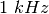
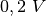
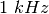
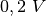

Transmission d’un signal Opto-électrique¶
Objectif
Démontrer la transmission de signaux à l’aide de lumière. Une DEL est alimentée par un signal de fréquence 1 kHz et on dirige sa lumière vers un photo-transistor.


Procédure
- Placer la DEL en face du photo-transistor et régler SQ1 à

- Recommencer l’expérience en changeant la fréquence.
Discussion
L’entrée SEN est connectée à 5 V à travers une résistance de
 . La sortie du photo-transistor crée un signal de fréquence
 comme montré sur la figure. Le signal carré est la tension qui
alimente la DEL. Quand la DEL est allumée, le photo-transistor est
conducteur et la tension au collecteur tombe à . Quand la DEL
est éteinte le transistor passe en mode isolant et le collecteur remonte
à la tension de l’alimentation. Les temps de montée et de descente du
photo-transistor semblent être différents. Trouver la limite haute en
fréquence à laquelle le photo-transistor est capable de répondre.
. La sortie du photo-transistor crée un signal de fréquence
 comme montré sur la figure. Le signal carré est la tension qui
alimente la DEL. Quand la DEL est allumée, le photo-transistor est
conducteur et la tension au collecteur tombe à . Quand la DEL
est éteinte le transistor passe en mode isolant et le collecteur remonte
à la tension de l’alimentation. Les temps de montée et de descente du
photo-transistor semblent être différents. Trouver la limite haute en
fréquence à laquelle le photo-transistor est capable de répondre.
Recommencer cette expérience avec une fibre optique pour guider la lumière depuis la DEL jusqu’au photo-transistor.